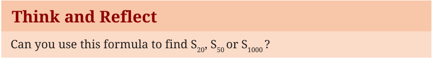

- Find the \(10^{\text{th}}\) and \(26^{\text{th}}\) terms of the AP: 3, 8, 13, 18, ….
- Which term of the AP: 21, 18, 15, … is \(-81\)? Also, is 0 a term of this AP? Give reasons for your answer.
- Find the \(n^{\text{th}}\) term of the AP: 11, 8, 5, 2, … . Write the recursive rule for this AP.
- An AP consists of 50 terms in which the \(3^{\text{rd}}\) term is 12 and the last term is 106. Find the \(29^{\text{th}}\) term. (Hint: If ‘a’ is the first term and ‘d’ the common difference, then we arrive at the equations \(a + 2d = 12\) and \(a + 49d = 106\). Solve this pair of linear equations for ‘a’ and ‘d’.)
- How many 2-digit numbers are divisible by 3? What is the sum of all these 2-digit numbers?
- Harish started work at an annual salary of ₹5,00,000 and received an increment of ₹20,000 each year. After how many years did his income reach ₹7,00,000?
- A child arranges marbles in rows so that the first row has 1 marble, the second has 2 marbles, the third has 3, and so on up to 25 rows. How many marbles does the child use in all?